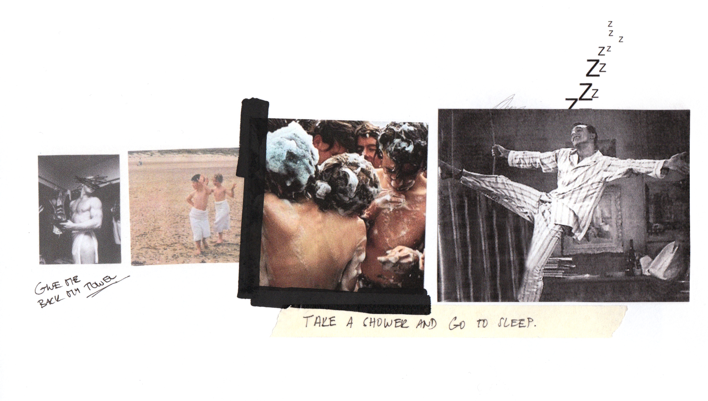

The “oh boy“ collection is a story of siblings, preparing for their
game. Game for the few, where you are in charge of your own armour.
Steal- ing dad’s tailored jackets, hockey armour and pyjamas, found
in his closet and combining it with figure skating dresses and tights
of their own, prepared for your next training. Towels could do, you
have plen- ty around the house. The denim insulation you saw laying
around the shed could also be useful, it might get cold.
Ach jo offers a unique inside of a world, created by children’s wild
gination, where a strange game is about to begin.
Playing with perspective, volume and materials, this collection is
aim- ing to capture the extravagant and provocative imagination,
where playfulness compliments classic tailoring, prints playing
along with menswear patters and silhouettes constantly changing
the game from fluid to constructed shapes. It is a world created
by children, prepar- ing for their imaginary game where no rules
apply. Capturing the beautiful chaos in childs head is the prior
essence of this collection.
Film Stills
Film Stills
Film Stills
Film Stills
Film Stills
Film Stills
Film Stills
The aesthetic of the collection offers a modern interpretation of
mas- culinity and femininity through a conscious cross-pollination
between menswear and womenswear elements. Inspired by children,
where no boundaries are set. It is a game of paradoxes. From a
female to male, from a child to an adult, from settle to extravagant,
from fantasy to reality, from can’t to can.

Look Book
Look Book
Look Book
Look Book
Look Book
Look Book
Look Book
Look Book
Look Book
Look Book
Look Book
Look Book
Look Book
Look Book
Look Book
Look Book
Look Book
Look Book
Look Book
Look Book
Look Book
Full Film
Director: Tomáš Bláha
Cinematographer: Tomáš Uhlík
Graffer: Filip Hájek
Music: Calm Season - Symbol, Pt. 1
Models: Michaela Němečková, Štěpán Vrzal
Photographer: Tomáš Teglý